附录 D、自动微分
这个附录解释了 TensorFlow 的自动微分功能是如何工作的，以及它与其他解决方案的对比。
假定你定义了函数  ，需要得到它的偏导数
，需要得到它的偏导数  和
和  ，以用于梯度下降或者其他优化算法。你的可选方案有手动微分法，符号微分法，数值微分法，前向自动微分，和反向自动微分。TensorFlow 实现的反向自动微分法。我们来看看每种方案。
，以用于梯度下降或者其他优化算法。你的可选方案有手动微分法，符号微分法，数值微分法，前向自动微分，和反向自动微分。TensorFlow 实现的反向自动微分法。我们来看看每种方案。
手动微分法
第一个方法是拿起一直笔和一张纸，使用你的代数知识去手动的求偏导数。对于已定义的函数，求它的偏导并不太困难。你需要使用如下 5 条规则：
- 常数的导数为 0。
- 的导数为
 ， 为常数。
， 为常数。  的导数是
的导数是 - 函数的和的导数，等于函数的导数的和
- 乘以函数，再求导，等于 乘以函数的导数
从上述这些规则，可得到公式 D-1。

这个种方法应用于更复杂函数时将变得非常罗嗦，并且有可能出错。好消息是，像刚才我们做的求数学式子的偏导数可以被自动化，通过一个称为符号微分的过程。
符号微分
图 D-1 展示了符号微分是如何运行在相当简单的函数上的，。该函数的计算图如图的左边所示。通过符号微分，我们可得到图的右部分，它代表了  ，相似地也可得到关于
，相似地也可得到关于y的导数。

概算法先获得叶子节点的偏导数。常数 5 返回常数 0，因为常数的导数总是 0。变量x返回常数 1，变量y返回常数 0，因为  （如果我们找关于
（如果我们找关于y的偏导数，那它将反过来）。
现在我们移动到计算图的相乘节点处，代数告诉我们，u和v相乘后的导数为  。因此我们可以构造有图中大的部分，代表
。因此我们可以构造有图中大的部分，代表0 × x + y × 1。
最后我们往上走到计算图的相加节点处，正如 5 条规则里提到的，和的导数等于导数的和。所以我们只需要创建一个相加节点，连接我们已经计算出来的部分。我们可以得到正确的偏导数，即：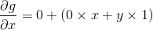。
然而，这个过程可简化。对该图应用一些微不足道的剪枝步骤，可以去掉所有不必要的操作，然后我们可以得到一个小得多的只有一个节点的偏导计算图： 。
。
在这个例子里，简化操作是相当简单的，但对更复杂的函数来说，符号微分会产生一个巨大的计算图，该图可能很难去简化，以导致次优的性能。更重要的是，符号微分不能处理由任意代码定义的函数，例如，如下已在第 9 章讨论过的函数：
def my_func(a, b):
z = 0
for i in range(100):
z = a * np.cos(z + i) + z * np.sin(b - i)
return z
数值微分
从数值上说，最简单的方案是去计算导数的近似值。回忆h(x)在  的导数 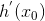，是该函数在该点处的斜率，或者更准确如公式 D-2 所示。
的导数 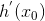，是该函数在该点处的斜率，或者更准确如公式 D-2 所示。

因此如果我们想要计算  关于
关于x，在  处的导数，我们可以简单计算 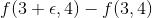 的值，将这个结果除以
处的导数，我们可以简单计算 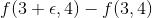 的值，将这个结果除以  ，且 去很小的值。这个过程正是如下的代码所要干的。
，且 去很小的值。这个过程正是如下的代码所要干的。
def f(x, y):
return x**2*y + y + 2
def derivative(f, x, y, x_eps, y_eps):
return (f(x + x_eps, y + y_eps) - f(x, y)) / (x_eps + y_eps)
df_dx = derivative(f, 3, 4, 0.00001, 0)
df_dy = derivative(f, 3, 4, 0, 0.00001)
不幸的是，偏导的结果并不准确（并且可能在求解复杂函数时更糟糕）。上述正确答案分别是 24 和 10 ，但我们得到的是：
>>> print(df_dx)
24.000039999805264
>>> print(df_dy)
10.000000000331966
注意到为了计算两个偏导数， 我们不得不调用f()至少三次（在上述代码里我们调用了四次，但可以优化）。如果存在 1000 个参数，我们将会调用f()至少 1001 次。当处理大的神经网络时，这样的操作很没有效率。
然而，数值微分实现起来如此简单，以至于它是检查其他方法正确性的优秀工具。例如，如果它的结果与您手动计算的导数不同，那么你的导数可能包含错误。
前向自动微分
前向自动微分既不是数值微分，也不是符号微分，但在某些方面，它是他们的爱情结晶。它依赖对偶数。对偶数是奇怪但迷人的，是 形式的数，这里a和b是实数， 是无穷小的数，满足  ，但 。你可以认为对偶数
，但 。你可以认为对偶数  类似于有着无穷个 0 的 42.0000⋯000024（但当然这是简化后的，仅仅给你对偶数什么的想法）。一个对偶数在内存中表示为一个浮点数对，例如， 表示为
类似于有着无穷个 0 的 42.0000⋯000024（但当然这是简化后的，仅仅给你对偶数什么的想法）。一个对偶数在内存中表示为一个浮点数对，例如， 表示为(42.0, 24.0)。
对偶数可相加、相乘、等等操作，正如公式 D-3 所示。

最重要的，可证明h(a + bϵ) = h(a) + b × h'(a)ϵ，所以计算一次h(a + ϵ)就得到了两个值h(a)和h'(a)。图 D-2 展示了前向自动微分如何计算 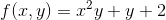 关于x，在 处的导数。我们所要做的一切只是计算 ；它将输出一个对偶数，其第一部分等于 ，第二部分等于 。

为了计算 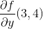 我们不得不再遍历一遍计算图，但这次前馈的值为 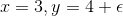。
所以前向自动微分比数值微分准确得多，但它遭受同样的缺陷：如果有 1000 个参数，那为了计算所有的偏导数，得历经计算图 1000 次。这正是反向自动微分耀眼的地方：计算所有的偏导数，它只需要遍历计算图 2 次。
反向自动微分
反向自动微分是 TensorFlow 采取的方案。它首先前馈遍历计算图（即，从输入到输出），计算出每个节点的值。然后进行第二次遍历，这次是反向遍历（即，从输出到输入），计算出所有的偏导数。图 D-3 展示了第二次遍历的过程。在第一次遍历过程中，所有节点值已被计算，输入是 。你可以在每个节点底部右方看到这些值（例如，）。节点已被标号，从 到  。输出节点是
。输出节点是  。
。
这个计算关于每个连续节点的偏导数的思想逐渐地从上到下遍历图，直到到达变量节点。为实现这个，反向自动微分强烈依赖于链式法则，如公式 D-4 所示。
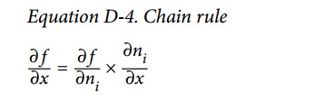
由于 是输出节点，即  ，所以
，所以  。
。
接着到了图的  节点：当 变化时，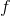 会变化多少？答案是 。我们已经知道 ，因此我们只需要知道
节点：当 变化时，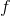 会变化多少？答案是 。我们已经知道 ，因此我们只需要知道  就行。因为 是
就行。因为 是  的和，因此可得到 ，因此 。
的和，因此可得到 ，因此 。
现在前进到  ：当 变化时， 会变化多少？答案是
：当 变化时， 会变化多少？答案是  。由于 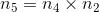，我们可得到 ，所以 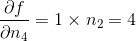。
。由于 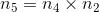，我们可得到 ，所以 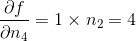。
这个遍历过程一直持续，此时我们达到图的底部。这时我们已经得到了所有偏导数在点 处的值。在这个例子里，我们得到  。听起来很美妙！
。听起来很美妙！
反向自动微分是非常强大且准确的技术，尤其是当有很多输入参数和极少输出时，因为它只要求一次前馈传递加上一次反向传递，就可计算所有输出关于所有输入的偏导数。最重要的是，它可以处理任意代码定义的函数。它也可以处理那些不完全可微的函数，只要 你要求他计算的偏导数在该点处是可微的。
如果你在 TensorFlow 中实现了新算子，你想使它与现有的自动微分相兼容，那你需要提供函数，该函数用于构建一个子图，来计算关于新算子输入的偏导数。例如，假设你实现了一个计算其输入的平方的函数，平方算子 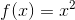，在这个例子中你需要提供相应的导函数  。注意这个导函数不计算一个数值结果，而是用于构建子图，该子图后续将计算偏导结果。这是非常有用的，因为这意味着你可以计算梯度的梯度（为了计算二阶导数，或者甚至更高阶的导数）。
。注意这个导函数不计算一个数值结果，而是用于构建子图，该子图后续将计算偏导结果。这是非常有用的，因为这意味着你可以计算梯度的梯度（为了计算二阶导数，或者甚至更高阶的导数）。